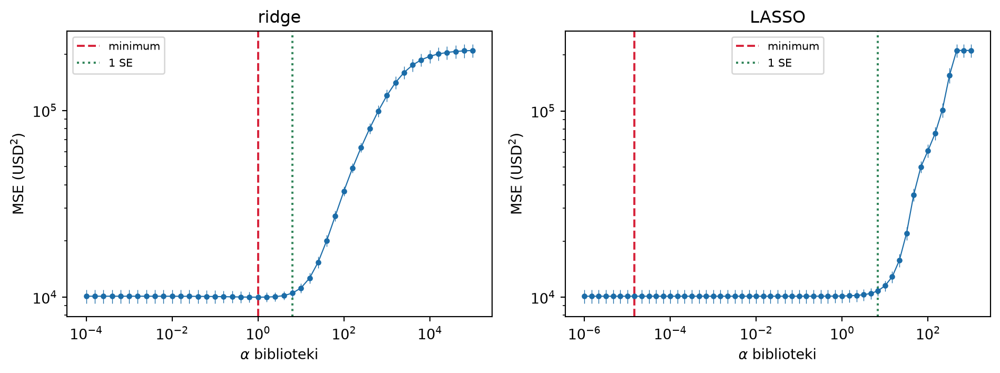

W danych Credit z rozdziału 6 limit kredytu (Limit) i ocena zdolności kredytowej (Rating) niosą bardzo podobną informację. Gdy uwzględniamy obie cechy, ich współczynniki są znacznie mniej dokładnie wyznaczone niż przy każdej z nich osobno. Czy powinniśmy usunąć jedną z tych cech? A może zachować obie, ale ograniczyć wielkość ich współczynników?
To dwa sposoby zmniejszenia swobody modelu. Selekcja predyktorów wybiera podzbiór cech, a pozostałym przypisuje współczynniki równe zero. Regularyzacja ogranicza dopasowanie przez karę za wielkość współczynników. W obu przypadkach możemy pogorszyć dopasowanie do próby, a poprawić przewidywanie nowych wyników. Mechanizm znamy z rozdziału 4: godzimy się na obciążenie, jeśli zmniejszenie wariancji daje większą korzyść.
W tym rozdziale najpierw nauczymy się wybierać podzbiory cech, potem przejdziemy do płynnego ściągania współczynników w regresji grzbietowej i LASSO. Na końcu porównamy całe procedury na danych Credit. Prostszy opis i dobra predykcja są dwoma celami: zbiór cech wygodny w interpretacji może dawać inne przewidywania niż model wybrany wyłącznie według błędu.
7.1 Dlaczego mniej predyktorów bywa lepiej
Rozważmy dodanie jednej cechy do regresji liniowej. Każda funkcja ze starego modelu nadal jest dostępna: wystarczy nadać nowemu współczynnikowi wartość zero. Dlatego najmniejsza osiągalna suma kwadratów reszt \(\mathrm{RSS}\) nie rośnie. W konsekwencji zwykłe \(R^2\) nie maleje. To własność dopasowania do tych samych danych, na których szukaliśmy współczynników (sekcja 6.4).
Nowa cecha wymaga jednak oszacowania kolejnego współczynnika. Jeśli niesie mało dodatkowej informacji o wyniku, jej dopasowanie może przede wszystkim odtwarzać szum. W kolejnej próbie uzyskamy inny współczynnik i inne predykcje. Dodawanie cech może więc zmniejszać błąd uczący i jednocześnie zwiększać błąd na nowych obserwacjach.
Pokazuje to kontrolowany eksperyment na rysunku 7.1. Losujemy \(n=60\) obserwacji i \(p=30\) cech. Wynik zależy tylko od pierwszej: \(Y=3X_1+\varepsilon\), gdzie \(\varepsilon\sim\Nrozk(0,2^2)\). Pierwsza i druga cecha są silnie skorelowane; pozostałe są niezależnym szumem. Porównujemy OLS z wszystkimi cechami, OLS z pierwszą cechą oraz ridge z ustaloną z góry karą. Model z jedną cechą zna tutaj właściwy podzbiór dzięki konstrukcji eksperymentu; w zastosowaniu musielibyśmy go dopiero wybrać.
Rysunek 7.1: Cechy szumowe i ściąganie: średni błąd uczący oraz błąd na niezależnych obserwacjach w 200 próbach. Model z jedną cechą otrzymuje właściwą cechę z konstrukcji eksperymentu. Przerywana linia oznacza wariancję błędu 4.
Pełny model osiąga najmniejszy błąd uczący, lecz płaci za szacowanie wielu zbędnych współczynników. Ridge częściowo ogranicza ten koszt, a model z właściwą cechą unika go prawie w całości. Gdy wiele cech niesie informację, ich usuwanie może kosztować więcej, niż oszczędza na wariancji.
Współliniowość dodatkowo utrudnia rozdzielenie efektów cech. Duże zmiany ich współczynników nie muszą jednak oznaczać równie dużych zmian predykcji w obszarze danych: wzrost jednego współczynnika może być równoważony spadkiem drugiego.
Przy wielu kolumnach pojawia się także problem jednoznaczności MNK. Jeśli macierz projektu z wyrazem wolnym ma więcej kolumn niż wierszy, nie ma pełnego rzędu kolumnowego. Współczynniki nie są wtedy wyznaczone jednoznacznie. Zerowy RSS wymaga dodatkowo, aby \(\y\) należał do przestrzeni kolumn tej macierzy. Pełny rząd wierszowy zapewnia to dla każdego \(\y\), ale sama duża liczba cech nie wystarcza: wielokrotne kopie tej samej kolumny nie pozwalają odtworzyć dowolnych wyników.
7.2 Selekcja podzbioru predyktorów
7.2.1 Przegląd zupełny
Zacznijmy od trzech cech Credit: Income, Limit, Rating. Przewidujemy Balance, czyli saldo zadłużenia w dolarach. Dla każdej cechy decydujemy, czy ją włączyć, zatem mamy \(2^3=8\) podzbiorów. Model pusty ma wyraz wolny i przewiduje średnią wyników uczących. W tabeli 7.1 dopasowujemy wszystkie modele.
Aby później niezależnie ocenić wybraną procedurę, już teraz odkładamy \(100\) z \(400\) obserwacji jako test. Wszystkie dalsze ilustracje ścieżek i kryteriów na Credit wykorzystują wyłącznie pozostałe \(300\).
Kod
credit = pd.read_csv("../dane/Credit.csv")ind_ucz, ind_test = train_test_split(np.arange(len(credit)), test_size=100, random_state=707)ucz = credit.iloc[ind_ucz].copy()cechy_male = ["Income", "Limit", "Rating"]y_ucz = ucz["Balance"].to_numpy()def rss_podzbior(dane, y, cechy): A = np.column_stack([np.ones(len(y)), dane[list(cechy)].to_numpy()]) beta = np.linalg.lstsq(A, y, rcond=None)[0]return np.sum((y - A @ beta)**2)wiersze = []for k inrange(4):for cechy in combinations(cechy_male, k): wiersze.append({"cechy": ", ".join(cechy) or"tylko średnia","k": k, "d": k +1, "RSS": rss_podzbior(ucz, y_ucz, cechy)})podzbiory = pd.DataFrame(wiersze)display(podzbiory.assign(**{"RSS / 1000": podzbiory["RSS"] /1000}) [["cechy", "d", "RSS / 1000"]].round(2))
Tabela 7.1: Wszystkie podzbiory trzech cech Credit, dopasowane na 300 obserwacjach uczących. Liczba d obejmuje wyraz wolny. RSS podano w tysiącach dolarów kwadratowych.
cechy
d
RSS / 1000
0
tylko średnia
1
62840.13
1
Income
2
48947.16
2
Limit
2
15953.25
3
Rating
2
15840.31
4
Income, Limit
3
7885.97
5
Income, Rating
3
7710.39
6
Limit, Rating
3
15812.82
7
Income, Limit, Rating
4
7612.20
Przegląd zupełny (ang. best subset selection) rozdziela dwa pytania. Najpierw, dla każdej liczby \(k\) cech, wybieramy podzbiór o najmniejszym RSS. Potem spośród otrzymanych \(p+1\) kandydatów wybieramy wielkość modelu według kryterium uwzględniającego jego złożoność lub według walidacji. Sam RSS wybrałby pełny model.
W każdym rozmiarze \(k\) mamy \(\binom pk\) podzbiorów, a łącznie \(2^p\). Dla \(p=20\) to ponad milion modeli; dla \(p=40\) – ponad bilion. Przegląd znajduje najlepszy podzbiór według kryterium na przeszukanej liście. Nie zapewnia najmniejszego nieznanego ryzyka ani odkrycia właściwych zmiennych w populacji.
7.2.2 Metoda schodów w przód i wstecz
Przy większej liczbie cech można zbudować krótszą listę kandydatów. Selekcja w przód (ang. forward stepwise selection) zaczyna od modelu pustego. W pierwszym kroku dodaje cechę dającą najmniejszy RSS. W kolejnym wybiera najlepsze rozszerzenie tego właśnie modelu o jedną cechę. Cech już wybranych nie usuwa. Buduje w ten sposób zagnieżdżoną ścieżkę modeli o \(0,1,\ldots,p\) cechach.
Selekcja wstecz (ang. backward stepwise selection) zaczyna od pełnego modelu. Usuwa cechę, której usunięcie najmniej zwiększa RSS, i powtarza ten krok aż do modelu pustego. W klasycznej wersji wymagamy pełnego rzędu kolumnowego dopasowywanych modeli, więc start z pełnego modelu jest problematyczny, gdy cech jest zbyt wiele względem \(n\).
W przód sprawdzamy najwyżej \(p+(p-1)+\cdots+1=p(p+1)/2\) rozszerzeń. Oszczędność ma cenę: najlepsza para cech nie musi zawierać cechy, która osobno była najlepsza. Pierwszy krok może więc zamknąć drogę do najlepszego podzbioru danej wielkości. Podobnie jest wstecz. Krok wyboru przećwiczymy w Zadanie 7.2.
Liczba cech na ścieżce jest ustawieniem procedury. Gdy wybieramy ją przez CV, całą ścieżkę budujemy ponownie w części uczącej każdego podziału. Wybranie podzbiorów na całej próbie, a dopiero potem ocenianie tych ustalonych podzbiorów przez CV ujawnia procedurze wyniki z przyszłych części walidacyjnych (sekcja 5.5).
AdnotacjaZmienna a kolumna modelu
Zmienna jakościowa o czterech poziomach daje zwykle trzy kolumny kodowania. Przy selekcji całych zmiennych włączamy lub usuwamy ten blok razem; w karach za liczbę parametrów liczymy trzy współczynniki. Dla interakcji zwykle zachowujemy odpowiadające im efekty główne, aby model miał interpretację zgodną z rozdziałem 6. Zwykłe LASSO opisane dalej wybiera pojedyncze kolumny, więc nie wymusza ani wyboru całego bloku, ani tej zasady dla interakcji.
7.3 Kryteria wyboru modelu
Ile musi zmaleć RSS, aby warto było dodać parametr? Jedną odpowiedzią jest dopisanie kary za złożoność. Inną – pomiar błędu na danych niewykorzystanych przy dopasowaniu. Najpierw rozważymy pierwszą drogę.
We wzorach tej sekcji \(d\) oznacza liczbę współczynników łącznie z wyrazem wolnym, a \(n\) – liczbę obserwacji użytych w dopasowaniu. Porównujemy OLS na tych samych obserwacjach i dla tego samego wyniku, przy pełnym rzędzie kolumnowym macierzy projektu, a więc \(d\leq n\). Zakładamy ponadto \(d<n\) i dodatni RSS; przy \(d=n\) model odtwarza wyniki uczące dokładnie. Liczby parametrów nie należy tu zastępować liczbą nazw zmiennych.
7.3.1 Skorygowany współczynnik determinacji
Skorygowany \(R^2\) z sekcji 6.4 ma postać \[
\overline R^2=1-\frac{\mathrm{RSS}/(n-d)}{\mathrm{TSS}/(n-1)}.
\tag{7.1}\] Zwiększenie \(d\) zmniejsza mianownik \(n-d\). RSS musi więc odpowiednio spaść, aby poprawił się cały wynik. Wybieramy największy\(\overline R^2\). Korekta osłabia nagradzanie rozbudowy modelu, ale nadal wykorzystuje te same dane do dopasowania i wyboru.
7.3.2 Kryterium Cp Mallowsa
Kryterium \(C_p\)(Mallows 1973) porównuje RSS z oszacowaniem wariancji błędu \(\widehat\sigma^2\): \[
C_p=\frac{\mathrm{RSS}}{\widehat\sigma^2}-n+2d.
\tag{7.2}\] Mimo historycznego indeksu \(p\) we wzorze liczymy parametry przez \(d\), zgodnie z przyjętą konwencją. Wybieramy najmniejsze\(C_p\). Wspólną estymatę \(\widehat\sigma^2\) zwykle wyznaczamy z dostatecznie bogatego modelu, dzieląc jego RSS przez resztowe stopnie swobody.
Skąd kara \(2d\)? Porównajmy w tych samych punktach \(\x_1,\dots,\x_n\) błąd na wynikach uczących z błędem dla nowych wyników \(Y_i^{\mathrm{nowe}}\), których błędy są niezależne od uczących i mają tę samą wariancję \(\sigma^2\). Oznaczmy przez \(b_i=\fopt(\x_i)-\E\widehat y_i\) obciążenie predykcji w punkcie \(i\); nie zakładamy, że jest zerem. Predykcja \(\widehat y_i\) ma wariancję \(\sigma^2h_{ii}\) (sekcja 6.3), a reszta \(y_i-\widehat y_i\) – wariancję \(\sigma^2(1-h_{ii})\) (sekcja 6.8). Stąd \[
\E(y_i-\widehat y_i)^2=\sigma^2(1-h_{ii})+b_i^2,
\qquad
\E(Y_i^{\mathrm{nowe}}-\widehat y_i)^2=\sigma^2+\sigma^2h_{ii}+b_i^2 .
\] Nowy wynik jest niezależny od \(\widehat y_i\), więc wariancje się dodają. Wynik uczący wchodzi natomiast do \(\widehat y_i\) z wagą \(h_{ii}\) i predykcja częściowo za nim podąża. Różnica wynosi \(2\sigma^2h_{ii}\), a po zsumowaniu, z (6.10), \(2\sigma^2 d\). Zatem \(\mathrm{RSS}+2d\sigma^2\) ma tę samą wartość oczekiwaną co suma kwadratów błędów dla nowych wyników. \(C_p\) to ta wielkość podzielona przez \(\sigma^2\) i pomniejszona o stałą \(n\); nieznane \(\sigma^2\) zastępujemy oszacowaniem.
Gdy model służący do wyznaczenia \(\widehat\sigma^2\) pomija ważną strukturę średniej, reszty zawierają także niedopasowanie i oszacowanie może być zawyżone. Gdy brak resztowych stopni swobody, ten sposób jego uzyskania w ogóle nie działa. Rachunek dotyczy ustalonego modelu; kara nie usuwa optymizmu wynikającego z przeszukiwania wielu modeli (twierdzenie 5.2).
7.3.3 AIC i BIC
Kryterium informacyjne Akaikego, AIC(Akaike 1974), opiera się na maksimum logarytmu wiarygodności \(\ell(\widehat\theta)\): \[
\mathrm{AIC}=-2\ell(\widehat\theta)+2q,
\] gdzie \(q\) jest liczbą wszystkich szacowanych parametrów modelu probabilistycznego. Logarytm wiarygodności mierzy, jak dobrze model przypisuje prawdopodobieństwo obserwowanym danym. Dla regresji z niezależnymi normalnymi błędami i nieznaną wspólną wariancją mamy \(q=d+1\): \(d\) współczynników i wariancję. Po oszacowaniu wariancji przez RSS/\(n\) i pominięciu składników wspólnych wszystkim porównywanym modelom otrzymujemy \[
\mathrm{AIC}_{\mathrm{por}}=n\log(\mathrm{RSS}/n)+2d.
\tag{7.3}\] Możemy używać tej postaci do wyboru: minimum jest takie samo. To nie jest wersja dla znanej wariancji; przy znanej \(\sigma^2\) składnik dopasowania jest proporcjonalny do \(\mathrm{RSS}/\sigma^2\).
Kryterium Schwarza, BIC(Schwarz 1978), zastępuje karę \(2q\) karą \(q\log n\). W tej samej rodzinie normalnych modeli liniowych porównujemy \[
\mathrm{BIC}_{\mathrm{por}}=n\log(\mathrm{RSS}/n)+d\log n.
\tag{7.4}\] Oba kryteria minimalizujemy. Dla \(n\geq8\) kara za parametr w BIC jest większa niż w AIC. AIC służy przybliżaniu jakości modelu jako opisu nowych wyników przez logarytm wiarygodności; BIC wywodzi się z porównania probabilistycznych modeli przy innych założeniach. Różne kary i cele mogą dawać różne wybory. Żadne z tych kryteriów nie zapewnia w każdej próbie najmniejszego błędu kwadratowego predykcji.
Na Credit możemy policzyć wszystkie kryteria dla tych samych ośmiu podzbiorów. Wariancję do \(C_p\) szacujemy tu z modelu trzech cech; jest to założenie ilustracji, które może być nietrafne: nie uwzględniamy jeszcze choćby statusu studenta.
Tabela 7.2: Kryteria dla podzbiorów trzech cech. AIC i BIC pomijają wspólne stałe. Do Cp użyto wariancji resztowej modelu trzech cech.
cechy
skorygowany R²
Cp
AIC
BIC
0
tylko średnia
0.000
2145.534
3677.697
3681.400
1
Income
0.218
1607.307
3604.741
3612.148
2
Limit
0.745
324.341
3268.417
3275.825
3
Rating
0.747
319.949
3266.286
3273.693
4
Income, Limit
0.874
12.646
3059.044
3070.155
5
Income, Rating
0.876
5.818
3052.289
3063.400
6
Limit, Rating
0.747
320.880
3267.765
3278.876
7
Income, Limit, Rating
0.878
4.000
3050.444
3065.259
Skorygowany \(R^2\), \(C_p\) i AIC wybierają wszystkie trzy cechy. BIC wskazuje Income i Rating: dodanie Limit obniża RSS z około \(7{,}71\) do \(7{,}61\) miliona, lecz poprawa nie rekompensuje większej kary BIC.
7.3.4 Walidacja krzyżowa i cel wyboru
CV porównuje średnie straty poza częścią uczącą, powtarzając dopasowanie w kolejnych podziałach. Pozwala tym samym językiem ocenić selekcję, ridge i LASSO. Przepis znamy z sekcji 5.4; zastosujemy go w sekcji 7.6. Liczba cech na ścieżce, siła kary i wybór samej metody są ustawieniami procedury. Ich ustalanie wymaga danych do wyboru, a końcowa ocena – osobnych danych lub zagnieżdżenia (sekcja 5.6).
Wybór podzbioru nie jest jeszcze wnioskowaniem o jego współczynnikach. Klasyczne testy i przedziały z rozdziału 6 traktują postać modelu jako ustaloną. Jeśli najpierw na tym samym wyniku wybieramy cechy, a potem stosujemy te wzory jak dla z góry określonego modelu, nie uwzględniamy etapu selekcji. Zwykła p-wartość po takim postępowaniu nie ma automatycznie deklarowanej interpretacji (Berk i in. 2013).
7.4 Regresja grzbietowa
Selekcja podejmuje decyzję: współczynnik może być dopasowany swobodnie albo musi być zerem. Regresja grzbietowa (ang. ridge regression) (Hoerl i Kennard 1970) pozwala go stopniowo zmniejszać. Do RSS dodajemy karę kwadratową: \[
(\widehat\beta_{0,\lambda},\widehat\bbeta_\lambda)
\in\argmin_{\beta_0,\bbeta}
\left\{\sum_{i=1}^n(y_i-\beta_0-\x_i^\top\bbeta)^2
+\lambda\sum_{j=1}^p\beta_j^2\right\},\qquad\lambda\geq0.
\tag{7.5}\]
Kara zniechęca do dużych współczynników. Dla \(\lambda=0\) jest to zadanie MNK; zwiększając \(\lambda\), mocniej ograniczamy dopasowanie. Wyrazu wolnego nie karzemy: poziom wyniku zależy od umownego początku skali i nie chcemy ściągać go do zera.
7.4.1 Dlaczego skala ma znaczenie
Niech Income oznacza dochód w tysiącach dolarów. Po przeliczeniu go na dolary wartości cechy rosną tysiąckrotnie, a współczynnik tej samej funkcji predykcji maleje tysiąckrotnie. Jego kwadrat maleje milion razy. Przy tych samych predykcjach kara zależy więc od jednostki. OLS nie ma tego problemu, bo minimalizuje tylko RSS.
Przed regularyzacją zwykle standaryzujemy kolumny: odejmujemy średnią i dzielimy przez odchylenie standardowe wyznaczone na danych uczących. Współczynnik opisuje wtedy zmianę predykcji na jedno odchylenie cechy, a kary nie zależą od pierwotnych jednostek. Dla stałej kolumny trzeba zrezygnować ze skalowania lub ją usunąć. Te same wyuczone przekształcenia stosujemy do nowych obserwacji; nie wyznaczamy dla nich nowych średnich.
Skalowanie nie rozwiązuje wszystkich decyzji dotyczących reprezentacji. Dla cech jakościowych trzeba ustalić kodowanie i sposób traktowania kolumn zero-jedynkowych. Po ich standaryzacji kara dotyczy zmiany o jedno odchylenie kolumny; dla rzadkiego poziomu odpowiada to innej zmianie w jednostkach oryginalnych. Wybór poziomu odniesienia przy wielu kategoriach również może zmienić karę. Reprezentacja jest częścią metody.
7.4.2 Rozwiązanie i mechanizm ściągania
Oznaczmy średnie uczące przez \(\bar y\) i \(\bar\x\). Dla ustalonego \(\bbeta\) najlepszy niekarany wyraz wolny wynosi \[
\widehat\beta_0=\bar y-\bar\x^\top\bbeta.
\tag{7.6}\] Możemy więc odjąć średnie od \(\y\) i każdej kolumny \(\X\), rozwiązać zadanie bez wyrazu wolnego, a następnie odzyskać go z tego wzoru. W kolejnych rachunkach \(\X\) i \(\y\) oznaczają właśnie wycentrowane dane; macierz \(\X\) ma \(p\) kolumn i nie zawiera kolumny jedynek.
Pochodna funkcji \(\|\y-\X\bbeta\|^2+\lambda\bbeta^\top\bbeta\) względem \(\bbeta\) to \(-2\X^\top(\y-\X\bbeta)+2\lambda\bbeta\). Przyrównując ją do zera, otrzymujemy układ \((\X^\top\X+\lambda\mathbf I)\bbeta=\X^\top\y\).
Twierdzenie 7.1 (Rozwiązanie regresji grzbietowej) Dla wycentrowanych danych i \(\lambda>0\) zadanie (7.5) ma dokładnie jedno rozwiązanie \[
\widehat\bbeta_\lambda=(\X^\top\X+\lambda\mathbf I)^{-1}\X^\top\y,
\tag{7.7}\] także wtedy, gdy kolumny \(\X\) są liniowo zależne.
Dla \(\lambda>0\) macierz układu jest dodatnio określona: \(\mathbf v^\top(\X^\top\X+\lambda\mathbf I)\mathbf v=\|\X\mathbf v\|^2+\lambda\|\mathbf v\|^2>0\) dla \(\mathbf v\ne\mathbf 0\). Jest więc odwracalna, a funkcja celu jest ściśle wypukła, zatem punkt zerowania gradientu jest jedynym minimum. W obliczeniach rozwiązujemy układ równań, zamiast jawnie liczyć odwrotność. Dla \(\lambda=0\) pozostaje zadanie MNK, które może mieć wiele rozwiązań.
W jednej wycentrowanej cesze oznaczmy \(s=\sum_i x_i^2>0\) oraz \(z=\sum_i x_i y_i\). OLS daje \(\widehat\beta_{\mathrm{OLS}}=z/s\), a ridge \[
\widehat\beta_\lambda=\frac{z}{s+\lambda}
=\frac{s}{s+\lambda}\widehat\beta_{\mathrm{OLS}}.
\tag{7.8}\] Mnożymy oszacowanie OLS przez liczbę między zerem a jednością. Gdy \(s=10\) i OLS daje \(3\), kary \(\lambda=0,10,30\) dają odpowiednio \(3\), \(1{,}5\) i \(0{,}75\). Większa kara oznacza mocniejsze ściąganie. Po ponownym losowaniu błędów cały rozrzut oszacowań jest mnożony przez ten sam czynnik, więc wariancja jest mnożona przez jego kwadrat. Przy niezerowym prawdziwym współczynniku pojawia się za to obciążenie.
Przy wielu skorelowanych cechach mechanizm działa wspólnie na wektor współczynników. Pojedynczy współczynnik nie musi maleć monotonicznie co do modułu (rysunek 7.2). Ridge nie ma jednak mechanizmu progowania do zera: zwykle zachowuje wszystkie cechy. Dokładne zero może wystąpić np. przez szczególną strukturę danych. Gdy \(\lambda\to\infty\), wszystkie nachylenia dążą do zera, a model przewiduje \(\bar y\).
Liczba kolumn nie opisuje już całej swobody modelu: te same kolumny przy małej i dużej karze dają bardzo różne dopasowania. Dlatego kar za liczbę parametrów z sekcji 7.3, podanych dla OLS, nie przenosimy do ridge przez mechaniczne wpisanie liczby kolumn. Rachunek efektywnych stopni swobody rozwija sekcja 7.7.
7.5 LASSO i geometria regularyzacji
7.5.1 Kara bezwzględna i dokładne zera
LASSO (ang. least absolute shrinkage and selection operator) (Tibshirani 1996) zastępuje sumę kwadratów sumą modułów: \[
(\widehat\beta_{0,\lambda},\widehat\bbeta_\lambda)
\in\argmin_{\beta_0,\bbeta}
\left\{\sum_{i=1}^n(y_i-\beta_0-\x_i^\top\bbeta)^2
+\lambda\sum_{j=1}^p|\beta_j|\right\}.
\tag{7.9}\] Wyraz wolny pozostaje niekarany, a reguły skalowania i centrowania są takie jak w ridge. Zmiana kary ma duży skutek: część współczynników może być dokładnie równa zero. LASSO łączy zatem ściąganie z selekcją.
Zobaczmy to dla jednej wycentrowanej cechy, przy oznaczeniach \(s,z\) z sekcji 7.4. Pomijając składnik niezależny od \(\beta\), minimalizujemy \[
s\beta^2-2z\beta+\lambda|\beta|.
\] Dla \(\beta>0\) pochodna wynosi \(2s\beta-2z+\lambda\), więc kandydatem jest \((z-\lambda/2)/s\), o ile jest dodatni. Dla \(\beta<0\) dostajemy \((z+\lambda/2)/s\), o ile jest ujemny. Jeśli \(|z|\leq\lambda/2\), funkcja maleje do zera od lewej i rośnie od zera w prawo; minimum wypada w zerze. Razem:
Twierdzenie 7.2 (Miękkie progowanie) Dla jednej wycentrowanej cechy z \(s=\sum_i x_i^2>0\) i \(z=\sum_i x_iy_i\) zadanie (7.9) ma rozwiązanie \[
\widehat\beta_\lambda=
\frac{\operatorname{sign}(z)(|z|-\lambda/2)_+}{s},
\qquad (a)_+=\max(a,0).
\tag{7.10}\]
To miękkie progowanie: zmniejszamy moduł \(z\) o \(\lambda/2\), a wartości niewiększe od progu zastępujemy zerem. Liczba \(1/2\) wynika z naszej konwencji RSS plus kara. Gdy \(s=10\) i \(z=30\), OLS daje \(3\); LASSO dla \(\lambda=10,30,60\) daje \(2{,}5\), \(1{,}5\) i \(0\). Porównaj z ridge w Zadanie 7.5.
7.5.2 Ścieżki współczynników na Credit
Wróćmy do Credit. Na rysunku 7.2 uwzględniamy Income, Limit, Rating oraz status studenta zapisany jako \(0/1\). Po skalowaniu współczynniki są wyrażone w dolarach salda na jedno odchylenie standardowe cechy. Zwiększanie kary w LASSO kolejno zeruje część współczynników; w ridge zmiana jest płynna bez takiego progu.
W kodzie trzeba uważać na definicję kary. Według dokumentacji Ridge minimalizuje RSS \(+\alpha\|\beta\|_2^2\), natomiast Lasso minimalizuje RSS\(/\,(2n)+\alpha\|\beta\|_1\). Dlatego w naszej konwencji \[
\lambda_{\mathrm{ridge}}=\alpha_{\mathrm{Ridge}},
\qquad \lambda_{\mathrm{LASSO}}=2n\alpha_{\mathrm{Lasso}}.
\tag{7.11}\] Te same liczby alpha w obu klasach nie oznaczają tych samych współczynników przy RSS. Również same kary kwadratowa i bezwzględna mają inne skale, więc na rysunku każda rodzina ma własną oś.
Rysunek 7.2: Ścieżki współczynników na uczącej części Credit, po standaryzacji czterech cech. Każda rodzina ma własny zakres lambda w konwencji RSS plus kara.
Przy znikomej karze ridge daje współczynniki bliskie OLS: \(308\) przy Limit i \(316\) przy Rating. Już przy \(\lambda\approx10\) oba są praktycznie równe i dalej maleją razem. Kara \(\beta_L^2+\beta_R^2\) przy ustalonej sumie \(\beta_L+\beta_R\) jest najmniejsza dla równych składników, a dla dwóch prawie identycznych cech predykcje zależą niemal wyłącznie od sumy.
Współczynnik Income zmienia znak przy \(\lambda\approx280\): z \(-281\) do około \(+24\) przy \(\lambda=1000\). Gdy \(\lambda\) jest duże w porównaniu z elementami \(\X^\top\X\), wzór (7.7) daje \(\widehat\bbeta_\lambda\approx\X^\top\y/\lambda\). Każdy współczynnik jest wtedy proporcjonalny do zwykłej korelacji cechy z wynikiem, a dla Income wynosi ona \(0{,}47\). Przy małej karze współczynnik opisuje natomiast związek przy ustalonych pozostałych cechach: przy tym samym limicie i ocenie wyższy dochód idzie w parze z niższym saldem.
LASSO zeruje kolejno Income (\(\lambda\approx3{,}4\cdot10^4\)), Student (\(7\cdot10^4\)), Limit (\(1{,}5\cdot10^5\)) i Rating. Ostatni próg wynika z (7.10). Gdy pozostałe współczynniki są zerami, cecha \(j\) widzi wycentrowane wyniki i pozostaje zerem, dopóki \(|\sum_i x_{ij}y_i|\leq\lambda/2\). Wszystkie współczynniki znikają więc od \(\lambda=2\max_j|\sum_i x_{ij}y_i|\approx2{,}37\cdot10^5\). Rating wygrywa z Limit minimalnie: suma \(\sum_i x_{ij}y_i\) wynosi \(118\,743\) wobec \(118\,600\). Wybór między prawie identycznymi cechami rozstrzyga tu niewielka różnica w próbie.
7.5.3 Kara jako budżet
Można też minimalizować RSS przy ograniczeniu wielkości wektora: \[
\sum_{j=1}^p\beta_j^2\leq t\quad\text{(ridge)},
\qquad
\sum_{j=1}^p|\beta_j|\leq t\quad\text{(LASSO)}.
\tag{7.12}\] Liczba \(t\) to budżet na współczynniki. Duży budżet dopuszcza rozwiązanie MNK; mniejszy wymusza lepszy pod względem RSS punkt w ograniczonym zbiorze. Kara i budżet są dwoma sposobami opisu regularyzacji: rozwiązaniu dla danej dodatniej kary odpowiada budżet równy osiągniętej wielkości wektora. Dla dodatnich budżetów można dobrać odpowiadającą karę; nie jest to ogólnie relacja jeden do jednego. Budżet zerowy może wymagać granicy \(\lambda\to\infty\), jak w ridge.
Dla dwóch współczynników budżet ridge wyznacza koło, a LASSO – romb. Poziomice RSS są elipsami wokół rozwiązania OLS (w tym przykładzie okręgami). Szukamy najmniejszej poziomicy, która spotyka zbiór dopuszczalny. Na rysunku 7.3 kontakt z rombem wypada na osi, zatem jeden współczynnik jest zerem. Załamanie granicy daje cały zakres kierunków poziomic, dla których zachodzi taki kontakt. Przy gładkim brzegu koła kontakt na osi wymaga szczególnego ułożenia danych.
Rysunek 7.3: Minimalizacja tej samej funkcji RSS przy dwóch ograniczeniach. Punkt czarny oznacza minimum bez ograniczeń (OLS), a czerwony – minimum w dopuszczalnym zbiorze. Budżety dobrano dla czytelności mechanizmu.
7.5.4 Co oznacza wybranie cechy
Zerowy współczynnik LASSO oznacza, że przy danej próbie, reprezentacji i karze procedura nie wykorzystuje tej kolumny. Nie dowodzi braku związku cechy z wynikiem. Dwie cechy mogą zastępować się informacyjnie, a niewielka zmiana próby może zmienić wybraną reprezentantkę. Dlatego warto osobno badać stabilność wyboru i stabilność predykcji (Zadanie 7.8).
Przy zależnych kolumnach współczynniki LASSO mogą być niejednoznaczne. Na przykład dla dwóch identycznych kolumn rozdzielenie dodatniego współczynnika między nie nie zmienia ani RSS, ani sumy modułów. Liczba niezerowych współczynników nie musi też zmieniać się monotonicznie na całej ścieżce kar. Selekcja do predykcji nie identyfikuje przyczyn zjawiska, podobnie jak zwykła regresja.
AdnotacjaRozszerzenie: elastic net
Wymagane są wyłącznie pojęcia ridge i LASSO z tego rozdziału. Można połączyć obie kary, dodając do RSS \(\lambda_1\sum_j|\beta_j|+\lambda_2\sum_j\beta_j^2\). Dodatnia kara kwadratowa zapewnia jednoznaczność wektora współczynników, a kara bezwzględna zachowuje możliwość zerowania. Taka metoda nazywa się elastic net(Zou i Hastie 2005). Dwa parametry wymagają ustalonej procedury strojenia; nie włączamy ich do poniższego porównania.
7.6 Dobór regularyzacji i porównanie metod
7.6.1 Kandydaci i role danych
Pozostaje dobrać siłę kary. Błąd uczący skłaniałby do jej osłabiania, więc do wyboru użyjemy pięciokrotnej CV. Test odłożony na początku rozdziału posłuży dopiero do końcowej oceny. Wybór metody – tak samo jak wybór jej ustawień – zostanie zamknięty przed obejrzeniem testu. Przy małej próbie odpowiednikiem tego postępowania jest zagnieżdżenie opisane w sekcji 5.6.
Porównamy OLS, selekcję w przód, ridge i LASSO. Z góry ograniczamy listę kandydatów do siedmiu cech: sześciu liczbowych oraz Student, kodowanego jako \(0/1\). Pozostałych cech jakościowych nie wykorzystujemy w tym przykładzie. Pozwala to skupić się na regularyzacji bez rozbudowy kodu wybierającego całe bloki kategorii.
Selekcję w przód zdefiniujemy dokładnie tak jak w sekcji 7.2: w każdym kroku wybieramy najmniejszy uczący RSS, a liczba kroków jest ustawieniem wybieranym przez CV. Poniższa klasa dopasowuje całą ścieżkę do żądanej długości przy każdym wywołaniu fit. Dzięki temu wewnątrz CV wybiera cechy wyłącznie z aktualnej części uczącej.
Kod: selekcja w przód według uczącego RSS
class SelekcjaWPrzod(RegressorMixin, BaseEstimator):def__init__(self, n_features=1):self.n_features = n_featuresdef fit(self, X, y): X, y = np.asarray(X), np.asarray(y)self.n_features_in_ = X.shape[1]ifnot1<=self.n_features <= X.shape[1]:raiseValueError("Liczba cech musi należeć do zakresu 1,...,p.") wybrane = []for _ inrange(self.n_features): kandydaci = []for j inrange(X.shape[1]):if j notin wybrane: cechy = wybrane + [j] model = LinearRegression().fit(X[:, cechy], y) rss = np.sum((y - model.predict(X[:, cechy]))**2) kandydaci.append((rss, j)) wybrane.append(min(kandydaci)[1])self.wybrane_ = wybraneself.model_ = LinearRegression().fit(X[:, wybrane], y)returnselfdef predict(self, X):returnself.model_.predict(np.asarray(X)[:, self.wybrane_])
Dla modelu pustego użyjemy osobno DummyRegressor; pozwala to wybrać również zero cech. Wszystkie przekształcenia wymagające uczenia, w tym standaryzacja, są częścią potoku poddanego CV. Zapisanie mapowania No/Yes jako \(0/1\) nie wymaga wyznaczania parametrów na danych.
Kod
from sklearn.dummy import DummyRegressorcechy_praktyka = ["Income", "Limit", "Rating", "Cards", "Age", "Education", "Student"]X_calosc = credit[cechy_praktyka].copy()X_calosc["Student"] = X_calosc["Student"].map({"No": 0, "Yes": 1})X_train = X_calosc.iloc[ind_ucz].to_numpy()Y_train = credit.iloc[ind_ucz]["Balance"].to_numpy()# Dane testowe nie uczestniczą w żadnym dopasowaniu ani wyborze.X_test = X_calosc.iloc[ind_test].to_numpy()Y_test = credit.iloc[ind_test]["Balance"].to_numpy()cv =list(KFold(n_splits=5, shuffle=True, random_state=708).split(X_train))alfa_ridge = np.geomspace(1e-4, 1e5, 46)alfa_lasso = np.geomspace(1e-6, 1e3, 55)procedury = {"OLS": (LinearRegression(), {}),"selekcja w przód": (SelekcjaWPrzod(), {"model__n_features": list(range(1, 8))}),"ridge": (Ridge(), {"model__alpha": alfa_ridge}),"LASSO": (Lasso(max_iter=100000, tol=1e-8), {"model__alpha": alfa_lasso}),"średnia": (DummyRegressor(strategy="mean"), {}),}wyszukiwania = {}for nazwa, (estymator, siatka) in procedury.items(): potok = Pipeline([("skala", StandardScaler()), ("model", estymator)]) szukaj = GridSearchCV(potok, siatka, scoring="neg_mean_squared_error", cv=cv, refit=True, error_score="raise") szukaj.fit(X_train, Y_train) wyszukiwania[nazwa] = szukaj# Większy wynik scoring jest lepszy, zatem zmieniamy znak, aby dostać MSE.wyniki_cv = pd.DataFrame([ {"metoda": nazwa, "MSE CV": -szukaj.best_score_,"ustawienie": (f"alpha = {szukaj.best_params_['model__alpha']:.3g}"if"model__alpha"in szukaj.best_params_ elsef"liczba cech = {szukaj.best_params_['model__n_features']}"if"model__n_features"in szukaj.best_params_ else"bez strojenia")}for nazwa, szukaj in wyszukiwania.items()]).sort_values("MSE CV")wybrana_metoda = wyniki_cv.iloc[0]["metoda"]display(wyniki_cv.reset_index(drop=True).round(2))for nazwa in ["ridge", "LASSO"]: szukaj = wyszukiwania[nazwa]if szukaj.best_index_ ==len(szukaj.cv_results_["params"]) -1:raiseRuntimeError(f"Minimum {nazwa} na brzegu: poszerz siatkę przed oceną testową.")if szukaj.best_index_ ==0: display(Markdown(f"**{nazwa}:** minimum przy najmniejszej karze. ""Porównaj wynik z OLS i sprawdź granicę słabej regularyzacji."))
metoda
MSE CV
ustawienie
0
ridge
10001.63
alpha = 1
1
LASSO
10120.03
alpha = 1.47e-05
2
selekcja w przód
10120.03
liczba cech = 7
3
OLS
10120.03
bez strojenia
4
średnia
211356.25
bez strojenia
Wspólny podział daje każdej metodzie te same łatwe i trudne przypadki. Poszukiwanie kar odbywa się na skali logarytmicznej: interesują nas zmiany rzędu wielkości, a nie stały krok. Gdy minimum wypada na brzegu, przed oceną testową trzeba sprawdzić szerszy zakres.
Krzywa CV dla LASSO jest płaska dla \(\alpha\) poniżej około \(1\) (rysunek 7.4). W tym zakresie MSE CV pokrywa się z wynikiem OLS do dwóch miejsc po przecinku, więc położenie minimum na tym odcinku wynika z dokładności obliczeń i nie niesie informacji o danych. LASSO z karą wybraną przez CV jest tu praktycznie modelem OLS: dane nie wskazują korzyści z wyraźnego progowania.
W LASSO stroimy biblioteczne alpha, czyli współczynnik kary przy średniej stracie, zgodnie z dokumentacją i wzorem (7.11). Po ponownym dopasowaniu na większym zbiorze zachowujemy to samo alpha; odpowiadające mu \(\lambda=2n\alpha\) w konwencji RSS rośnie z \(n\). W Ridge jest odwrotnie: alpha jest samym \(\lambda\), a sumy \(s_j=\sum_i x_{ij}^2\) rosną z \(n\). Czynnik \(s_j/(s_j+\lambda)\) jest więc po dopasowaniu na \(300\) obserwacjach bliższy jedności niż w częściach uczących CV liczących \(240\) obserwacji: ta sama wartość alpha ściąga słabiej.
Nie wystarczyłoby dopasować skaler na wszystkich \(300\) obserwacjach, a dopiero potem przekazać przeskalowane dane do CV. Potok musi być przekazany do procedury strojenia, tak jak powyżej. Ta sama uwaga dotyczy połączenia skalera z estymatorem, który ma własną wewnętrzną CV: skaler umieszczony przed nim nie jest automatycznie uczony od nowa w jego wewnętrznych podziałach.
7.6.2 Krzywe błędu i reguła jednego błędu standardowego
Kod
fig, osie = plt.subplots(1, 2, figsize=(10, 3.8))wybory_1se = {}for ax, nazwa inzip(osie, ["ridge", "LASSO"]): szukaj = wyszukiwania[nazwa] wynik = szukaj.cv_results_ alfa = np.array([p["model__alpha"] for p in wynik["params"]]) mse =-wynik["mean_test_score"]# Pięć części nie jest niezależnymi powtórzeniami badania.# Ten błąd standardowy jest tylko roboczą skalą dla heurystyki 1 SE. fold_mse = np.array([-wynik[f"split{k}_test_score"] for k inrange(5)]) se = fold_mse.std(axis=0, ddof=1) / np.sqrt(5) j = szukaj.best_index_ dopuszczone = np.flatnonzero(mse <= mse[j] + se[j]) j1se = dopuszczone[np.argmax(alfa[dopuszczone])] wybory_1se[nazwa] = alfa[j1se] ax.errorbar(alfa, mse, yerr=se, color=kolory[0], marker=".", lw=0.8, elinewidth=0.5) ax.axvline(alfa[j], color=kolory[1], ls="--", label="minimum") ax.axvline(alfa[j1se], color=kolory[2], ls=":", label="1 SE") ax.set(xscale="log", yscale="log", xlabel=r"$\alpha$ biblioteki", ylabel=r"MSE (USD$^2$)", title=nazwa) ax.legend(fontsize=8)plt.tight_layout()plt.show()

Rysunek 7.4: Wybór kary na uczącej części Credit. Punkty oznaczają średnie MSE z pięciu części, a pionowe kreski przybliżony błąd standardowy liczony z rozrzutu wyników części. Linia przerywana wskazuje minimum, kropkowana – wybór reguły 1 SE. Oś kary podaje biblioteczne alpha, o różnych normalizacjach dla obu rodzin.
Kod
display(pd.DataFrame([{"rodzina": nazwa,"alpha minimum": f"{wyszukiwania[nazwa].best_params_['model__alpha']:.3g}","alpha 1 SE": f"{wybory_1se[nazwa]:.3g}"}for nazwa in wybory_1se]).set_index("rodzina"))
Tabela 7.3: Biblioteczne alpha wybrane przez minimum CV i przez regułę 1 SE (rysunek 7.4).
alpha minimum
alpha 1 SE
rodzina
ridge
1
6.31
LASSO
1.47e-05
6.81
Reguła jednego błędu standardowego z sekcji 5.4 pozwala wybrać mocniejszą karę, jeżeli jej wynik mieści się w ustalonym zakresie ponad minimum. Tutaj roboczo użyliśmy odchylenia wyników części podzielonego przez \(\sqrt5\). Części nie są niezależnymi powtórzeniami, ponieważ ich zbiory uczące się nakładają. Ta skala nie daje gwarantowanego przedziału ufności, a reguła pozostaje heurystyką, nie testem równoważności. W podstawowym porównaniu stosujemy ustaloną wcześniej regułę minimum. Wariant 1 SE ilustrujemy osobno; do jego użycia trzeba ponownie dopasować potok z wybraną karą.
7.6.3 Końcowa ocena i model do używania
GridSearchCV z refit=True dopasował każdą wybraną konfigurację na wszystkich \(300\) obserwacjach uczących. Możemy teraz wykorzystać test. MSE mierzymy w dolarach kwadratowych, a RMSE, jego pierwiastek, w dolarach. Dla ustalonego dopasowania przybliżony błąd standardowy testowego MSE wyznaczamy z rozrzutu \(100\) indywidualnych strat kwadratowych: \(\operatorname{sd}(L_i)/\sqrt{100}\). Nie jest to niepewność minimum CV.
Tabela 7.4: Ocena pięciu wcześniej ustalonych procedur na 100 odłożonych obserwacjach. Ustawienia i wybór głównej metody pochodzą wyłącznie z CV na części uczącej. SE dotyczy testowego MSE przy ustalonym dopasowaniu.
MSE
SE MSE
RMSE (USD)
metoda
OLS
10968.85
1471.82
104.73
selekcja w przód
10968.85
1471.82
104.73
ridge
11069.12
1409.60
105.21
LASSO
10968.85
1471.82
104.73
średnia
215219.36
25728.30
463.92
CV wybrała metodę ridge. Jej testowe RMSE wynosi 105,2 USD, a MSE 11069,1 USD² z przybliżonym błędem standardowym 1409,6 USD².
Selekcja w przód zachowała wszystkie siedem cech, a LASSO przy wybranej bardzo małej karze nie wyzerowało żadnego współczynnika. OLS, wybrany model selekcji i LASSO dają więc niemal identyczne predykcje. Ridge wybrany przez CV z \(\alpha=1\) ma na teście nieco większe MSE: około \(11069\) wobec \(10969\) dla OLS. Tabeli testowej nie używamy do zmiany wyboru: CV wskazała ridge i ten wybór pozostaje.
Średnia różnica strat ridge i OLS wynosi 100,3 USD², a jej błąd standardowy 174,0 USD².
Obie metody oceniamy na tych samych \(100\) obserwacjach, więc niepewność różnicy szacujemy z różnic strat \(L_i^{\mathrm{ridge}}-L_i^{\mathrm{OLS}}\) (sekcja 5.2). Błąd standardowy różnicy jest ponad ośmiokrotnie mniejszy niż błąd standardowy pojedynczego MSE (około \(1400\)): obserwacje trudne dla jednej metody są trudne i dla drugiej, więc ich rozrzut w dużej części się znosi. Mimo to różnica nie odróżnia się od zera.
Kod
model_do_uzywania = wyszukiwania[wybrana_metoda].best_estimator_wsp = pd.DataFrame({nazwa: wyszukiwania[nazwa].best_estimator_.named_steps["model"].coef_for nazwa in ["OLS", "ridge"]}, index=cechy_praktyka)display(wsp.round(1))
Tabela 7.5: Współczynniki OLS i ridge wybranego przez CV, na skali standaryzowanych cech: dolary salda na jedno odchylenie standardowe cechy.
OLS
ridge
Income
-279.2
-274.5
Limit
451.7
363.7
Rating
170.9
254.3
Cards
19.1
15.4
Age
-5.4
-5.4
Education
-7.9
-7.2
Student
127.7
126.7
Możemy teraz odpowiedzieć na pytanie z początku rozdziału. Ridge z \(\alpha=1\) prawie nie zmienia większości współczynników, za to wyraźnie przesuwa wagę między Limit a Rating: z \(452\) i \(171\) do \(364\) i \(254\). Suma obu współczynników prawie się nie zmienia (\(623\) i \(618\)), a ich różnica maleje z \(281\) do \(109\).
W części uczącej korelacja Limit i Rating wynosi \(0{,}997\). Predykcje zależą więc głównie od sumy współczynników, a różnica odpowiada kombinacji cech, która w próbie prawie się nie zmienia. Dane słabo ją wyznaczają; to ta sama niedokładność, którą w rozdziale 6 mierzył VIF. Kara \(\beta_L^2+\beta_R^2=\tfrac12\big[(\beta_L+\beta_R)^2+(\beta_L-\beta_R)^2\big]\) obciąża różnicę tak samo jak sumę, ale zmiana różnicy prawie nie zwiększa RSS. Ridge ściąga więc przede wszystkim różnicę. Na pytanie, czy usunąć jedną z cech, CV odpowiada: nie usuwać, tylko ściągnąć ich różnicę. W rachunku rozszerzenia 7.7 ta różnica odpowiada kierunkowi o \(s\approx0{,}64\), z czynnikiem \(0{,}64/1{,}64\approx0{,}39\), i rzeczywiście \(281\cdot0{,}39\approx109\). Dla następnego kierunku czynnik wynosi już \(0{,}99\).
Na tych danych kilka metod może działać podobnie: mamy umiarkowaną liczbę cech względem \(300\) obserwacji, a silna kara może usuwać użyteczną informację. Symulacja z początku rozdziału pokazywała trudniejszą sytuację pod względem liczby parametrów. Regularyzacja jest narzędziem kontroli dopasowania, a jej przydatność trzeba sprawdzić dla konkretnego problemu.
Obiekt model_do_uzywania zawiera również wyuczone skalowanie i może przewidywać nowe wiersze z tym samym porządkiem i kodowaniem cech. Jeśli po zamknięciu oceny dołączymy test i ponownie dobierzemy ustawienia lub dopasujemy model, otrzymamy inne dopasowanie. Dotychczasowy wynik testowy nie jest niezależną oceną tego nowego modelu.
7.7 Rozszerzenie: geometria ściągania i efektywne stopnie swobody
AdnotacjaMateriał nieobowiązkowy
Wymagane są algebra macierzowa, wartości własne i ślad macierzy. Tekst główny i zadania podstawowe z tej sekcji nie korzystają.
7.7.1 Kierunki o różnej dokładności
Dla wycentrowanego \(\X\) zapiszmy \(\X^\top\X=\mathbf V\operatorname{diag}(s_1,\ldots,s_p)\mathbf V^\top\), gdzie \(\mathbf V\) jest ortogonalna, a \(s_j\geq0\). Obrót przez \(\mathbf V\) zamienia skorelowane współczynniki na współrzędne związane z ortogonalnymi kierunkami. We współrzędnej o \(s_j>0\) ridge mnoży rozwiązanie OLS przez \[
\frac{s_j}{s_j+\lambda}.
\] Małe \(s_j\) oznacza mało informacji o odpowiadającej kombinacji współczynników. Właśnie te kierunki są tłumione mocniej. Na standaryzowanych siedmiu cechach Credit najmniejsze \(s_j\) wynosi \(0{,}64\), a odpowiadający mu kierunek to prawie dokładnie \((\text{Limit}-\text{Rating})/\sqrt2\); następne \(s_j\) to już \(79\). Przy \(\lambda=1\) czynnik ściągania wynosi więc \(0{,}39\) dla różnicy tych cech i co najmniej \(0{,}99\) dla pozostałych kierunków. Współczynnik przy oryginalnej cesze jest mieszaniną obróconych współrzędnych, co wyjaśnia brak monotonicznego zmniejszania każdego jego modułu. Przy \(s_j=0\) ridge wybiera współrzędną równą zero.
Przy modelu liniowym z wariancją błędów \(\sigma^2\mathbf I\) i ustalonym \(\X\) wariancja współrzędnej OLS wynosi \(\sigma^2/s_j\), natomiast ridge \(\sigma^2s_j/(s_j+\lambda)^2\). Jeśli prawdziwa współrzędna to \(b_j\), obciążenie ridge wynosi \(-\lambda b_j/(s_j+\lambda)\). Zmniejszenie wariancji ma zatem konkretną cenę; korzystny wybór kary zależy od nieznanych \(b_j\), poziomu szumu i celu predykcji.
7.7.2 Macierz wygładzania i stopnie swobody
Zapis \(\widehat\y=\mathbf S\y\) i ślad \(\mathbf S\) jako miarę elastyczności metody liniowej poznaliśmy w rozszerzeniu 6.9: dla OLS ślad wynosi \(p+1\), a dla \(k\)-NN \(n/k\). Niech \(\X\) nadal ma wycentrowane kolumny, a \(\mathbf J=\mathbf1\mathbf1^\top/n\). Predykcje na próbie, z uwzględnieniem niekaranego wyrazu wolnego, wynoszą \[
\widehat\y=\mathbf S_\lambda\y,\qquad
\mathbf S_\lambda=\mathbf J+\X(\X^\top\X+\lambda\mathbf I)^{-1}\X^\top.
\tag{7.13}\] Efektywne stopnie swobody tej liniowej procedury to \[
\operatorname{df}(\lambda)=\operatorname{tr}(\mathbf S_\lambda)
=1+\sum_{j=1}^p\frac{s_j}{s_j+\lambda},\qquad\lambda>0.
\tag{7.14}\] Jedynka pochodzi z wyrazu wolnego. Dla pełnego rzędu kolumnowego granica przy \(\lambda\downarrow0\) wynosi \(p+1\), a przy \(\lambda\to\infty\) – \(1\). Przy niepełnym rzędzie pierwsza granica to \(1+\operatorname{rank}(\X)\). Wymiar pośredni nie musi być całkowity: każda dodatnia kara ogranicza swobodę dopasowania bez usuwania kolumn.
Dla ustalonej kary, przy niezależnych błędach o wariancji \(\sigma^2\), średni optymizm RSS wobec predykcji niezależnego wektora odpowiedzi w tych samych punktach wynosi \(2\sigma^2\operatorname{tr}(\mathbf S_\lambda)\). Dlatego liczba kolumn nie jest właściwym zamiennikiem złożoności ridge w rachunku kar typu \(C_p\). Gdy wybieramy samą karę z danych, pojawia się ponadto koszt tego wyboru.
Dla ustalonych \(\lambda\) i skali kolumn wzór na LOOCV liniowego wygładzania z sekcji 5.12 daje \[
\mathrm{CV}_{\mathrm{LOO}}=\frac1n\sum_{i=1}^n
\left(\frac{y_i-\widehat y_i}{1-(\mathbf S_\lambda)_{ii}}\right)^2.
\] Skala musi tu być z góry ustalona: jeśli każde usunięcie obserwacji zmienia standaryzację, zmienia się również kara w oryginalnych współrzędnych i prosty wzór nie opisuje już takiej procedury.
7.8 Rozszerzenie: obliczanie LASSO przez aktualizację współrzędnych
AdnotacjaMateriał nieobowiązkowy
Wymagane są różniczkowanie i zapis macierzowy. Tekst główny i zadania podstawowe z tej sekcji nie korzystają.
Wzór (7.10) można wykorzystać wielokrotnie. Przy ustalonych pozostałych współczynnikach zdefiniujmy resztę częściową\[
r_i^{(j)}=y_i-\sum_{k\ne j}x_{ik}\beta_k.
\] Dla wycentrowanych danych wyraz wolny pomijamy. Minimalizacja względem samego \(\beta_j\) ma postać jednowymiarowego zadania z \(s_j=\sum_i x_{ij}^2\) i \(z_j=\sum_i x_{ij}r_i^{(j)}\). Aktualizujemy \[
\beta_j\leftarrow
\frac{\operatorname{sign}(z_j)(|z_j|-\lambda/2)_+}{s_j}.
\tag{7.15}\] Przechodzimy kolejno przez wszystkie kolumny i powtarzamy cykle (Friedman i in. 2007). Kolumny o zerowej zmienności usuwamy. Każda aktualizacja minimalizuje funkcję celu po jednej współrzędnej; nie zwiększa więc wartości celu. W przeciwieństwie do niezależnego zastosowania progu do oszacowań OLS, reszta częściowa uwzględnia aktualne współczynniki pozostałych cech.
Poniższy kod ilustruje cykle dla małego zadania. Przechowuje wartości celu i zatrzymuje się przy małej zmianie współczynników. Jest narzędziem dydaktycznym; biblioteczne solvery dodatkowo kontrolują dokładność warunków optymalności, m.in. przez lukę dualną.
Tabela 7.6: Aktualizacja współrzędnych i biblioteczne LASSO dla tego samego zadania. Kolumny danych są wycentrowane; lambda wynosi 20.
cecha
aktualizacje
Lasso
0
Income
-273.12912
-273.12912
1
Limit
229.88159
229.88159
2
Rating
383.92089
383.92089
Warunek małych zmian współczynników sam w sobie nie jest uniwersalnym certyfikatem dokładności. W przykładzie porównujemy także rozwiązanie z biblioteką przy zgodnej normalizacji kary. Dla silnie skorelowanych cech zbieżność może wymagać wielu cykli; to inny problem niż statystyczny wybór siły regularyzacji.
Uwagi bibliograficzne
Selekcję podzbiorów, metody schodów i kryteria \(C_p\), AIC i BIC przedstawiają James i in. (2023, rozdz. 6.1), a ridge i LASSO – James i in. (2023, rozdz. 6.2). Ten sam rozdział podręcznika zawiera przykłady obliczeniowe. Pełniejszy wykład dają Hastie i in. (2009): selekcję podzbiorów w rozdz. 3.3, ridge, LASSO i ich geometrię w rozdz. 3.4, a aktualizację współrzędnych w rozdz. 3.8. Kryteria \(C_p\) i AIC wyprowadzają jako oszacowania błędu predykcji w rozdz. 7.5, efektywną liczbę parametrów omawiają w rozdz. 7.6, a BIC w rozdz. 7.7.
Kryterium \(C_p\) omawia Mallows (1973). AIC wprowadził Akaike (1974), a kryterium BIC – Schwarz (1978). Kryteria te wynikają z różnych sposobów porównywania modeli probabilistycznych; ich wzory dla regresji normalnej wymagają konsekwentnego liczenia parametrów i tej samej próby danych. Nie zastępują oddzielenia wyboru od końcowej oceny procedury z rozdziału 5. Problem wnioskowania o współczynnikach modelu wybranego na tych samych danych oraz konstrukcję przedziałów, które uwzględniają etap selekcji, opisują Berk i in. (2013).
Klasyczna praca o regresji grzbietowej to artykuł Hoerl i Kennard (1970), a metodę LASSO zaproponował Tibshirani (1996). Zależność wyników od skali cech i stabilność wyboru przy podobnych predyktorach są częścią interpretacji tych metod, a nie tylko szczegółami obliczeń. W praktyce trzeba też sprawdzić normalizację funkcji celu w używanym oprogramowaniu, jak w porównaniu klas Ridge i Lasso powyżej. Połączenie obu kar, czyli elastic net, zaproponowali Zou i Hastie (2005). Algorytm aktualizacji współrzędnych dla LASSO opisują Friedman i in. (2007).
Zadania
Zadania od Zadanie 7.1 do Zadanie 7.8 korzystają z tekstu głównego. Dwa ostatnie zadania rozwijają materiał rozszerzeń.
Zadanie 7.1 Rozważ trzy cechy \(A,B,C\). Poniższa tabela jest przykładem dydaktycznym; RSS dotyczy dopasowania na jednej próbie, a MSE CV obliczono przez powtarzanie całej selekcji wewnątrz części uczących.
Podzbiór
RSS
pusty
200
A
140
B
150
C
170
A, B
120
A, C
125
B, C
110
A, B, C
100
Liczba cech
MSE CV procedury przeglądu zupełnego
0
12
1
9
2
8
3
10
Dla każdej liczby cech wskaż podzbiór o najmniejszym RSS.
Wybierz wielkość modelu według CV. Jaki podzbiór zostanie dopasowany na całej próbie po tym wyborze?
Dlaczego najmniejszy RSS nie prowadzi do tego samego wyboru?
Wyjaśnij, dlaczego nie wolno wybrać podzbiorów z pierwszej tabeli na całej próbie, a dopiero potem traktować ich jako ustalonych kandydatów przy wyznaczaniu CV.
Zadanie 7.2 Korzystając z tabeli RSS w Zadanie 7.1:
Wypisz ścieżkę selekcji w przód, od modelu pustego do pełnego.
Wypisz ścieżkę selekcji wstecz.
Czy obie ścieżki zawierają najlepszy podzbiór dwóch cech?
Ile modeli trzeba dopasować w przeglądzie zupełnym przy \(p=10\), a ile rozszerzeń ocenić w pełnej ścieżce w przód? Model początkowy policz osobno.
Zadanie 7.3 Na tych samych \(n=100\) obserwacjach porównujemy dwa ustalone modele OLS. Pierwszy ma \(d=3\) parametry i RSS równy \(100\), drugi ma \(d=4\) parametry oraz RSS równy \(97\). Dane mają TSS równy \(200\), a wspólna estymata wariancji do \(C_p\) wynosi \(1\).
Oblicz skorygowany \(R^2\) i \(C_p\) dla obu modeli.
Oblicz AIC i BIC w postaciach do porównania (7.3) i (7.4).
Wyjaśnij ewentualną różnicę wyboru AIC i BIC. Jak duży spadek RSS kompensuje koszt jednego parametru w każdym z nich?
Dlaczego do obliczania tych kryteriów nie można bez zmiany rachunku użyć modelu ridge i wpisać za \(d\) liczby jego kolumn?
Zadanie 7.4 Model z cechą \(X\) wyrażoną w tysiącach dolarów ma współczynnik \(\beta=2\). Wprowadzamy cechę \(X'=1000X\) wyrażoną w dolarach.
Jaki współczynnik przy \(X'\) daje tę samą funkcję predykcji?
Jak zmieniają się kary \(\lambda\beta^2\) i \(\lambda|\beta|\) przy tym samym \(\lambda\)?
Pokaż, że standaryzacja \(X\) i \(X'\) na tej samej próbie daje identyczne wartości, gdy odchylenie standardowe jest dodatnie.
Które obserwacje wyznaczają średnią i odchylenie w jednym kroku CV? Jak przekształcamy obserwacje walidacyjne?
Zadanie 7.5 Dla jednej wycentrowanej cechy mamy \(s=\sum_i x_i^2=10\) oraz \(z=\sum_i x_i y_i=30\).
Oblicz OLS oraz ridge i LASSO dla \(\lambda=0,10,30,60\).
Od jakiej wartości kary współczynnik LASSO jest zerem? Czy ridge osiąga zero dla skończonej kary w tych danych?
Jeżeli wariancja OLS przy ustalonej cesze wynosi \(v\), jaka jest wariancja ridge dla \(\lambda=10\)? Wyjaśnij koszt takiej redukcji, gdy prawdziwy współczynnik wynosi \(3\).
Jakie alpha trzeba przekazać do Ridge i Lasso, aby przy \(n=100\) uzyskać \(\lambda=30\) w konwencji rozdziału?
Zadanie 7.6 Dla dwóch współczynników nieograniczona funkcja RSS, po pominięciu stałej, wynosi \((\beta_1-2)^2+(\beta_2-0{,}6)^2\).
Narysuj jej poziomice oraz zbiory \(\beta_1^2+\beta_2^2\leq1\) i \(|\beta_1|+|\beta_2|\leq1\).
Wskaż na rysunku rozwiązania obu zadań. Które ma zerową współrzędną?
Co stanie się, gdy ograniczenie przestanie wykluczać punkt OLS?
Wyjaśnij, dlaczego interpretacja rombu nie oznacza, że LASSO zawsze usuwa co najmniej jedną cechę.
Zadanie 7.7 Powtórz porównanie na Credit z sekcji 7.6, zachowując ten sam zbiór testowy i tę samą listę cech.
Wyjaśnij role każdej części danych w jednym kroku CV dla selekcji w przód i dla LASSO. Co jest wybierane, a co dopasowywane?
Na danych uczących wyznacz dla ridge i LASSO minimum CV i wariant reguły 1 SE. Dopasuj warianty na całej części uczącej i porównaj współczynniki oraz liczbę zer. Test pozostaw do końca.
Oceń wcześniej ustalone warianty na teście; podaj MSE, jego błąd standardowy i RMSE. Wyjaśnij, dlaczego wybranie zwycięzcy po obejrzeniu tej tabeli zmieniłoby rolę testu.
Wskaż błąd w postępowaniu: „najpierw wybieram trzy cechy najlepiej związane z saldem na wszystkich danych, potem używam potoku skalowanie plus LASSO w CV”. Czy sam potok naprawia ten błąd?
Zadanie 7.8 Wykorzystaj generator proba_liniowa z rysunku 7.1. Z góry ustal liczbę obserwacji \(n=60\) i kary: Ridge(alpha=30) oraz Lasso(alpha=0.5), każdorazowo po standaryzacji na próbie uczącej.
Wygeneruj \(200\) niezależnych prób uczących. Dla każdej dopasuj ridge i LASSO; zapisz współczynniki w oryginalnych jednostkach (podziel współczynniki po skalowaniu przez wyuczone odchylenia).
Jak często LASSO wybiera pierwszą, drugą i każdą z pozostałych cech? Jak często wybiera co najmniej jedną z pierwszych dwóch?
Na jednym dużym niezależnym zbiorze cech porównaj zmienność predykcji obu metod po próbach oraz ich średni błąd wobec prawdziwej funkcji \(3X_1\). Odróżnij to od błędu wobec nowego \(Y\).
Powtórz eksperyment dla korelacji pierwszej pary równej \(0\) oraz \(0{,}999\). Czy niestabilność współczynników i listy cech zawsze idzie w parze z równie dużą niestabilnością predykcji?
Zadanie 7.9Rozszerzenie: efektywne stopnie swobody ridge. Wymagane są algebra macierzowa, wartości własne i ślad macierzy.
Dla wycentrowanego \(\X\) dodatnie wartości własne \(\X^\top\X\) wynoszą \(1,10,100\), a pozostałe są zerowe. Wyraz wolny nie podlega karze.
Oblicz efektywne stopnie swobody dla \(\lambda=1,10,100\).
Wyznacz granice przy \(\lambda\downarrow0\) i \(\lambda\to\infty\).
Który kierunek jest najmocniej tłumiony przy \(\lambda=10\)?
Dla ogólnego \(\X\) uzasadnij wzór (7.14) przez własność \(\operatorname{tr}(AB)=\operatorname{tr}(BA)\).
Zadanie 7.10Rozszerzenie: aktualizacja współrzędnych LASSO. Wymagane są różniczkowanie i zapis macierzowy.
Wycentrowane dane spełniają \[
\X^\top\X=\begin{pmatrix}2&1\\1&2\end{pmatrix},\qquad
\X^\top\y=\begin{pmatrix}4\\3\end{pmatrix},\qquad\lambda=2.
\]
Zacznij od \((0,0)\) i wykonaj dwa cykle aktualizacji, najpierw pierwszej, potem drugiej współrzędnej.
Jak obliczysz \(z_j\) z samych \(\X^\top\X\), \(\X^\top\y\) i aktualnych współczynników, bez odtwarzania całego wektora reszt?
Sprawdź, że każda aktualizacja nie zwiększa funkcji celu; pomiń nieznaną stałą \(\y^\top\y\).
Wyjaśnij, dlaczego niezależne progowanie współczynników OLS nie zastępuje tych aktualizacji dla skorelowanych kolumn.
Akaike, H. 1974. „A new look at the statistical model identification”. IEEE Transactions on Automatic Control 19 (6): 716–23. https://doi.org/10.1109/tac.1974.1100705.
Berk, Richard, Lawrence Brown, Andreas Buja, Kai Zhang i Linda Zhao. 2013. „Valid Post-Selection Inference”. The Annals of Statistics 41 (2): 802–37. https://doi.org/10.1214/12-AOS1077.
Friedman, Jerome, Trevor Hastie, Holger Höfling i Robert Tibshirani. 2007. „Pathwise Coordinate Optimization”. The Annals of Applied Statistics 1 (2): 302–32. https://doi.org/10.1214/07-AOAS131.
Hastie, Trevor, Robert Tibshirani i Jerome Friedman. 2009. The Elements of Statistical Learning: Data Mining, Inference, and Prediction. 2. wyd. Springer.
Hoerl, Arthur E. i Robert W. Kennard. 1970. „Ridge Regression: Biased Estimation for Nonorthogonal Problems”. Technometrics 12 (1): 55–67. https://doi.org/10.1080/00401706.1970.10488634.
James, Gareth, Daniela Witten, Trevor Hastie, Robert Tibshirani i Jonathan Taylor. 2023. An Introduction to Statistical Learning with Applications in Python. Springer Texts in Statistics. Springer.
Tibshirani, Robert. 1996. „Regression Shrinkage and Selection Via the Lasso”. Journal of the Royal Statistical Society Series B: Statistical Methodology 58 (1): 267–88. https://doi.org/10.1111/j.2517-6161.1996.tb02080.x.
Zou, Hui i Trevor Hastie. 2005. „Regularization and Variable Selection Via the Elastic Net”. Journal of the Royal Statistical Society Series B: Statistical Methodology 67 (2): 301–20. https://doi.org/10.1111/j.1467-9868.2005.00503.x.